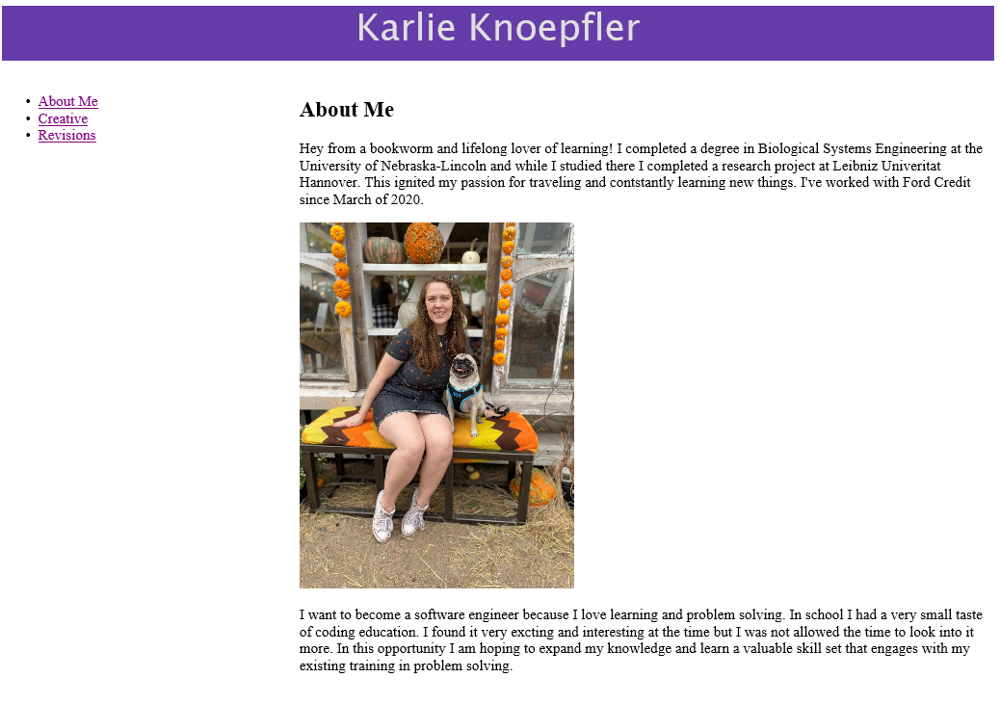
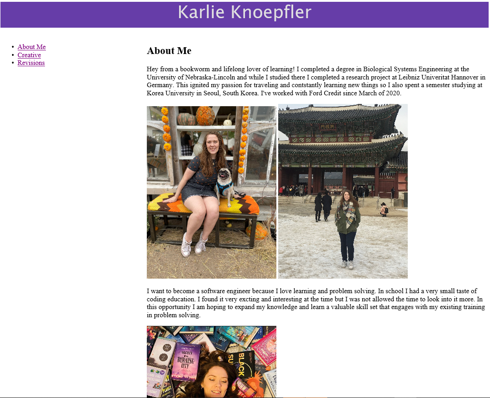

Revisions to This Site
I received some feedback from Janice Knoepfler, a fellow Ford Credit employee who is also my mom. She thought the original page needed some more background information about me and possibly another photo. I followed her advise and added additional text and images to the About Me page, which did make it more visually interesting.
